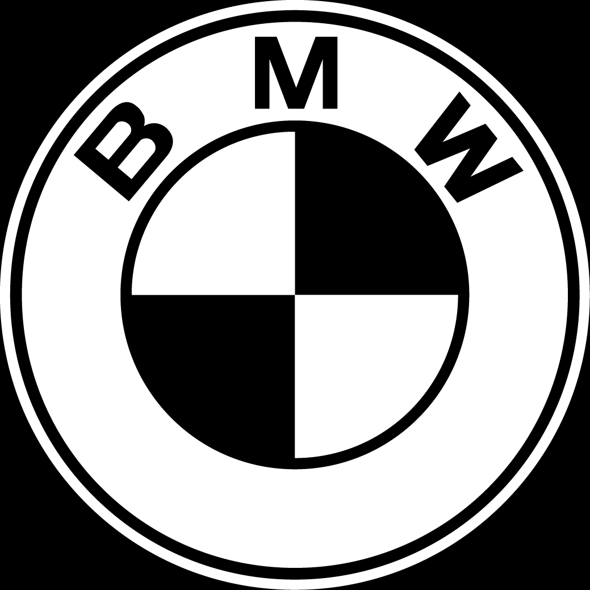
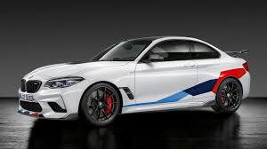

BMW E36
La carrocería E36 fue la base para el Serie 3 entre 1991 hasta el año 1999. Sucesor del E30 y sustituido por el E46 desde 1999, sin embargo debido a que los coupes y convertibles todavía estaban siendo desarrollados, esta carrocería se siguió produciendo en el año 1999. EL M3 fue producido en el mercado europeo desde 1993 hasta 1999, en Estados Unidos fue diferente ya que entró a este mercado en 1995 .
HISTORIA
WIKI
INDEX